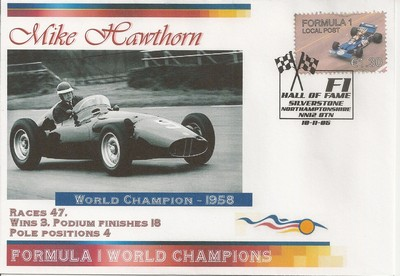

Mike Hawthorn (1958)
John Michael Hawthorn (10th April 1929 - 22nd January 1959) became Britain's first F1 drivers' champion in 1958. After winning the title he immediately announced his retirement having been profoundly affected by the death of his teammate and friend Peter Collins two months earlier.
1952 : LD Hawthorn / AHM Bryde
In 1952 Hawthorn started racing single-seaters - a Cooper T20; he made his F1 debut at the Belgian Grand Prix at Spa and finished fourth. Further successes, including third place at the Briish Grand Prix brought him to the attention of Enzo Ferrari.
1953 - 1954 : Ferrari
Hawthorn secured his first victory at the French Grand prix at Riems, outclassing Fangio in what was dubbed "the race of the century". He was less fortunate in his second season with Ferrari suffering serious burns in a crash, but still finished the season third overall.
1955 : Vandervell Products Ltd / Ferrari
Hawthorn needed to spend more time at the family garage he had inherited after the death of his father, so joined the Vanwall team. For Hawthorn, the F1 season was uninspired, so in 1955 he joined the Jaguar racing team (replacing Stirling Moss) to be more involved with sports car racing. It is this year that is remembered for the worst disaster in motor racing history - 84 spectators killed at the Le Mans 24 hours caused by the out of control Mercedes of Pierre Levegh which swerved to avoid Hawthorn's sudden braking to enter the pits.
1956 : Owen Racing Organisation / Vandervell Products Ltd
Another uninspiring season, driving the Maserati 250F and BRM P25 for the Owen Racing Orgnisation and the Vanwall VW2 for the Vandervell Products team. Hawthorn was becoming disillusioned with racing, despite still racing for Jaguar and winning Le Mans, he suffered two serious crashes this year and was unimpressed by the BRM team's poor management and car preparation.
1957 - 1958 : Ferrari
Hawthorn rejoined Ferrari in 1957 and became friends with Peter Collins with whom he had a great rivalry. Finally, in 1958 Hawthorn won the championship by one point from Stirling Moss. Moss won four races to Hawthorn's one win, but it was Moss's gentlemanliness that gifted the title to Hawthorn, in particular at the Portuguese Grand Prix when Moss interceded to overturn a decision to disqualify Hawthorn for bump starting his stalled car.
|  |  |